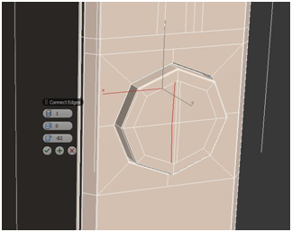

Hola a todos de nuevo y bienvenidos a este nuevo tutorial en español de 3ds max. Vamos a seguir con la tercera parte sobre cómo modelar un IPhone5 en 3ds max paso a paso. De momento os puedo dejar un render de cómo me va quedando a mí. Todavía no está terminado pero sí que os podéis ir haciendo una idea.
Vamos a continuar con nuestro modelado por donde nos quedamos en el anterior tutorial. Hoy toca modelar los botones de control de sonido, que los componen el botón de silenciar y los botones de subir y barjar el volumen
Nos ponemos en el marcha con el primer paso. Para empezar a modelar el botón de silencio, seleccionamos las aristas que vemos en la siguiente imagen. Recordad, que os podéis ayudar de diversos comandos de selección, como es el caso del comando "Ring".

Con estas aristas seleccionados, aplicamos un "connect" de dos secciones para determinar el área del botón de silencio. Podéis aplicar los siguientes valores.
En el siguiente paso volvemos a aplicar otro "connect" sobre las aristas de la parte interior que hemos creado en el paso anterior. Aquí tenéis los valores.
A continuación, seleccionamos las líneas del paso anterior más todas las que están en paralelo para realizar un "connect" de dos segmentos.
Seleccionamos los vértices que señalan las flechas de las aristas seleccionadas y modificamos su posición para que queden más o menos como se muestra en esta imagen.
Este paso os lo voy a complicar un poco; Tenéis que realizar un "connect" de 1 segmento y un "inset" de los polígonos interiores para que queden aproximademente de la siguiente forma. Recordad que podéis comentar vuestras dudas en los comentarios de esta entrada.
Extruimos los polígonos que quedan en la parte interior con un valor de -0,05cm.
Volvemos a aplicar un "inset" sobre los polígonos seleccionados del paso anterior.
Extruimos de hacia el exterior los polígonos que forman la pestaña del control de silencio de nuestro IPhone5 con los siguientes valores.
Aplicamos un "chamfer" de 0,006cm sobre las aristas que están seleccionadas de la pesataña de silencio del IPhone5. Este paso es necesario para que el modificador "turbosmooth" no suavice de forma tan exagerada estos bordes de la pestaña.
En el último paso realizaremos los cortes necesarios con el comando "Cut" y "connect" para llegar a la siguiente composición. Es bastante sencillo. Intentadlo y si tenéis alguna duda, podéis preguntar en los comentarios de esta entrada.
Una vez terminada la pesataña del control de silencio del móvil, vamos a seguir con los botones de subir y bajar volumen. Para ello, volvmos a realizar un "connect" como hicimos en los dos primeros pasos con los siguientes valores. Una vez realizado el "connect", moved las aristas seleccionadas hacia arriba hasta una posición cercana a la pestaña de silencio.
Dentro del polígono que véis a continuación, aplicad dos "connect" para realizar el corte horizontal y el corte vertical. Luego, con la ayuda del comando "Cut" realizad los cortes diagonales para que quede de la siguiente manera. En el centro sólamente debe quedar un vértice. Esto es muy importante.
Aplicad un "extrude" sobre el vértice que ha quedado justo en el centro con los siguientes valores.
Ahora tenéis que borrar el vértice que ha quedado en el centro y las 8 aristas que lo atraviesan. Os recuerdo que tenéis que borrar utilizando la tecla de "Backspace" o "Retroceso" de vuestro teclado. No borréis con la tecla de "suprimir". Primero borráis las aristas y luego el vértice. Quedará de la siguiente forma.
Extruimos hacia el interior el polígono que ha quedado como resultado con un valor de -0,1cm.
Y realizamos un inset del polígono que extruimos en el paso anterior con un valor de 0,01cm.
Con el polígono que ha quedado en el centro, volvemos a realizar otro "extrude". En este caso hacia el exterior y con un valor de 0,17cm.
A continuación realizamos un "chamfer" sobre todos los bordes de nuestro botón. Tenéis que seleccionar las siguientes aristas y aplicar un valor de 0,006cm de "chamfer".
Sobre el polígono interior del botón, realizamos un "inset" de 0,045cm.
Con el comando "cut" realizamos un corte horizontal y otro vertical para que quede así.
Seleccionamos las aristas que se muestran a continuación.
Y realizamos un "connect" con estos valores.
Realizamos otro "connect" en el otro lado.
Con la herramienta de "select and uniform scale" alineamos los vértices que hemos creado.
Repetimos los pasos anteriores para realizar ahora los cortes necesarios para formar las líneas horizontales que compondrán el símbolo "+" de nuestro botón.
A continuación, con los polígonos que forman el símbolo "+", realizamos un "extrude" con un valor de -0,02cm.
Seleccionamos las siguientes aristas.
Y aplicamos un chamfer de 0,002 cm para que el modificador "turbosmooth" no se pase suavizando los cantos de l símbolo de subir volumen.
Podéis ir viendo el resultado que irá dando con el modificador "turbosmooth" aplicado.